Disclaimer: The documents listed on this page are copyright-protected. By clicking on the [PDF] links below, you confirm that you or your institution have the right to access the corresponding pdf file.
Recent Papers
| 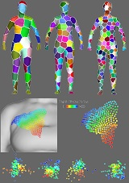 |
Yiu-Bun Wu, Bin Liu, Xiuping Liu, and Charlie C.L. Wang, "Data-driven human modeling by sparse representation",
Computer-Aided Design, accepted. [PDF]
Abstract Data-driven methods for modeling the realistic shape of 3D human bodies need to access datasets that contain a large amount of 3D human models. A very challenging problem is to find an appropriate representation for storing these 3D models as their raw data representations in triangular meshes take a large amount of space. We develop a method based on sparse representation in this paper to represent 3D human models as signals of patches. Unlike the general mesh compression approaches, all mesh models used in a data-driven human modeling framework have the same mesh connectivity. By using this property, we segment a human model into patches containing the same number of vertices. L0-learning algorithm is selected to train an overcomplete dictionary matrix, which in turn introduced sparse representation of the dataset. Patch signals of individual human models can then be extracted by using the dictionary matrix. With the ease of balance control between sparsity and accuracy that is featured by the chosen learning algorithm, a representation with high compression ratio and low shape-approximation error can be determined. The results have been compared with the widely used statistic representation based on principal component analysis (PCA) to verify the effectiveness of our approach. Moreover, the method for using sparse representation in the regression-based statistical modeling of 3D human models has been presented at the end of the paper. |
| 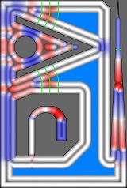 |
Tim Kuipers, Eugeni L. Doubrovski, Jun Wu, and Charlie C.L. Wang, "A framework for adaptive width control of dense contour-parallel toolpaths in fused deposition modeling", Computer-Aided Design, accepted.
[arXiv]
Abstract 3D printing techniques such as Fused Deposition Modeling (FDM) have enabled the fabrication of complex geometry quickly and cheaply. High stiffness parts are produced by filling the 2D polygons of consecutive layers with contour-parallel extrusion toolpaths. Uniform width toolpaths consisting of inward offsets from the outline polygons produce over- and underfill regions in the center of the shape, which are especially detrimental to the mechanical performance of thin parts. In order to fill shapes with arbitrary diameter densely the toolpaths require adaptive width. Existing approaches for generating toolpaths with adaptive width result in a large variation in widths, which for some hardware systems is difficult to realize accurately. In this paper we present a framework which supports multiple schemes to generate toolpaths with adaptive width, by employing a function to decide the number of beads and their widths. Furthermore, we propose a novel scheme which reduces extreme bead widths, while limiting the number of altered toolpaths. We statistically validate the effectiveness of our framework and this novel scheme on a data set of representative 3D models, and physically validate it by developing a technique, called back pressure compensation, for off-the-shelf FDM systems to effectively realize adaptive width. |
| 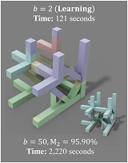 |
Chenming Wu, Yong-Jin Liu, and Charlie C.L. Wang, "Learning to accelerate decomposition for multi-directional 3D printing", 2020 IEEE International Conference on Automation Science and Engineering (CASE 2020), Hong Kong, August 20-24, 2020.
[Source Code]
[Video@YouTube]
Abstract Multi-directional 3D printing has the capability of decreasing or eliminating the need for support structures. Recent work proposed a beam-guided search algorithm to find an optimized sequence of plane-clipping, which gives volume decomposition of a given 3D model. Different printing directions are employed in different regions to fabricate a model with tremendously less support (or even no support in many cases). To obtain optimized decomposition, a large beam width needs to be used in the search algorithm, leading to a very time-consuming computation. In this paper, we propose a learning framework that can accelerate the beam-guided search by using a smaller number of the original beam width to obtain results with similar quality. Specifically, we use the results of beam-guided search with large beam width to train a scoring function for candidate clipping planes based on six newly proposed feature metrics. With the help of these feature metrics, both the current and the sequence-dependent information are captured by the neural network to score candidates of clipping. As a result, we can achieve around 3x computational speed. We test and demonstrate our accelerated decomposition on a large dataset of models for 3D printing. |
| 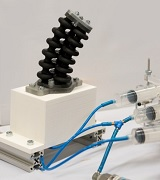 |
Guoxin Fang, Christopher-Denny Matte, Rob B.N. Scharff, Tsz-Ho Kwok, and Charlie C.L. Wang, "Kinematics of soft robots by geometric computing", IEEE Transactions on Robotics, accepted.
[PDF]
[Video@YouTube]
(This is an extended version of the paper - Geometry-based direct simulation for multi-material soft robots, which is published in 2018 IEEE ICRA Conference, Brisbane, Australia, May 21-25, 2018.) Abstract Robots fabricated with soft materials can provide higher flexibility and thus better safety while interacting in unpredictable situations. However, the usage of soft material makes it challenging to predict the deformation of a continuum body under actuation and therefore brings difficulty to the kinematic control of its movement. In this paper, we present a geometry-based framework for computing the deformation of soft robots within the range of linear material elasticity. After formulating both manipulators and actuators with geometry elements, deformation can be efficiently computed by solving a constrained optimization problem. Based on its efficiency, forward and inverse kinematics for soft manipulators can be effectively solved by an iterative algorithm. Meanwhile, components with multiple materials can also be geometrically modeled in our framework with the help of a simple calibration. Numerical and physical experimental tests are conducted on soft manipulators driven by different actuators with large deformation to demonstrate the performance of our approach. |
| 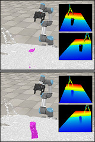 |
Chuhua Xian, Dongjiu Zhang, Chengkai Dai, and Charlie C.L. Wang, "Fast generation of high fidelity RGB-D images by deep-learning with adaptive convolution", IEEE Transactions on Automation Science and Engineering, accepted.
[arXiv]
[Source Code]
[Dataset]
Abstract Using the raw data from consumer-level RGB-D cameras as input, we propose a deep-learning based approach to efficiently generate RGB-D images with completed information in high resolution. To process the input images in low resolution with missing regions, new operators for adaptive convolution are introduced in our deep-learning network that consists of three cascaded modules - the completion module, the refinement module and the super-resolution module. The completion module is based on an architecture of encoder-decoder, where the features of input raw RGB-D will be automatically extracted by the encoding layers of a deep neural-network. The decoding layers are applied to reconstruct the completed depth map, which is followed by a refinement module to sharpen the boundary of different regions. For the super-resolution module, we generate RGB-D images in high resolution by multiple layers for feature extraction and a layer for up-sampling. Benefited from the adaptive convolution operators newly proposed in this paper, our results outperform the existing deep-learning based approaches for RGB-D image complete and super-resolution. As an end-to-end approach, high fidelity RGB-D images can be generated efficiently at the rate of around 21 frames per second. |
| 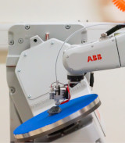 |
Chengkai Dai, Sylvain Lefebvre, Kai-Ming Yu, Jo M.P. Geraedts, and Charlie C.L. Wang,
"Planning jerk-optimized trajectory with discrete-time constraints for redundant robots", IEEE Transactions on Automation Science and Engineering, accepted.
[arXiv]
[Video@YouTube] Abstract We present a method for effectively planning the motion trajectory of robots in manufacturing tasks, the tool-paths of which are usually complex and have a large number of discrete-time constraints as waypoints. Kinematic redundancy also exists in these robotic systems. The jerk of motion is optimized in our trajectory planning method at the meanwhile of fabrication process to improve the quality of fabrication. Our method is based on a sampling strategy and consists of two major parts. After determining an initial path by graph-search, a greedy algorithm is adopted to optimize a path by locally applying adaptive filers in the regions with large jerks. The filtering result is obtained by numerical optimization. In order to achieve efficient computation, an adaptive sampling method is developed for learning a collision-indication function that is represented as a support-vector machine. Applications in robot-assisted 3D printing are given in this paper to demonstrate the functionality of our approach. |
| 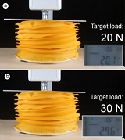 |
Alice Buso, Rob B.N. Scharff, Eugeni L. Doubrovski, Jun Wu, Charlie C.L. Wang, and Peter Vink,
"Soft robotic module for sensing and controlling contact force",
IEEE International Conference on Soft Robotics (RoboSoft 2020), Yale University, New Haven, Connecticut, USA, April 6-9, 2020.
[PDF] [Video@YouTube] Abstract This work presents a soft robotic module that can sense and control contact forces. The module is composed of a foam spring encapsulated by a pneumatic bellow that can be inflated to increase its stiffness. Optical sensors and a light source are integrated inside the soft pneumatic module. Changes in shape of the module lead to a variation in light reflectivity, which is captured by the optical sensors. These shape measurements are combined with air pressure measurements to predict the contact force through a machine learning model. Using these predictions, a closed-loop control of the contact force was implemented. The modules can be applied to realize pressure distribution control in support devices such as seats and mattresses. The presented method is robust and low-cost, can measure both shape and contact force, and does not require (rigid) sensors to be present at the movable contact interface between the support device and the user. |
| 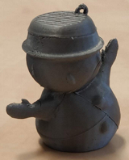 |
Chenming Wu, Chengkai Dai, Guoxin Fang, Yong-Jin Liu, and Charlie C.L. Wang, "General support-effective decomposition for multi-directional 3-D printing", IEEE Transactions on Automation Science and Engineering, vol.17, no.2, pp.599-610, April 2020.
[arXiv]
[Source Code]
[Video@YouTube]
[Report@3DPrint.com]
Abstract We present a method for fabricating general models with multi-directional 3D printing systems by printing different model regions along different directions. The core of our method is a support-effective volume decomposition algorithm that minimizes the area of the regions with large overhangs. A beam-guided searching algorithm with manufacturing constraints determines the optimal volume decomposition, which is represented by a sequence of clipping planes. While current approaches require manually assembling separate components into a final model, our algorithm allows for directly printing the final model in a single pass. It can also be applied to models with loops and handles. A supplementary algorithm generates special supporting structures for models where supporting structures for large overhangs cannot be eliminated. We verify the effectiveness of our method using two hardware systems: a Cartesian-motion based system and an angular-motion based system. A variety of 3-D models have been successfully fabricated on these systems. |
| 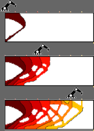 |
Weiming Wang, Dirk Munro, Charlie C.L. Wang, Fred van Keulen, and Jun Wu,
"Space-time topology optimization for additive manufacturing: concurrent optimization of structural layout and fabrication sequence", Structural and Multidisciplinary Optimization, vol.61, pp.1-18, January 2020. (ISSMO/Springer Prize)
[Project]
[PDF]
Abstract The design of optimal structures and the planning of (additive manufacturing) fabrication sequences have been considered typically as two separate tasks that are performed consecutively. In the light of recent advances in robot-assisted (wire-arc) additive manufacturing which enable addition of material along curved surfaces, we present a novel topology optimization formulation which concurrently optimizes the structure and the fabrication sequence. For this, two sets of design variables, i.e. a density field for defining the structural layout, and a time field which determines the fabrication process order, are simultaneously optimized. These two fields allow to generate a sequence of intermediate structures, upon which manufacturing constraints (e.g. fabrication continuity and speed) are imposed. The proposed space-time formulation is general, and is demonstrated on three fabrication settings, considering self-weight of the intermediate structures, process-dependent critical loads, and time-dependent material properties. |
| 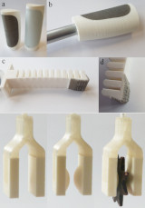 |
Lars Rossing, Rob B.N. Scharff, Bryan Chompff, Charlie C.L. Wang, and Eugeni L. Doubrovski, "Bonding between silicones and thermoplastics using 3D printed mechanical interlocking", Materials & Design, vol.186, article no.108254, January 2020.
Abstract Silicones have desirable properties such as skin-safety, high temperature-resistance, and flexibility. Many applications require the presence of a hard body connected to the silicone. Traditionally, it has been difficult to create strong bonding between silicones and hard materials. In this study, a technique is presented to control the bonding strength between silicones and thermoplastics through mechanical interlocking. This is realized through a hybrid fabrication method where silicone is cast onto a 3D-printed mold and structure. The influence of the structure's design parameters on the bonding strength is explored through theoretical modeling and physical testing while the manufacturability of the 3D-printed structure is ensured. A CAD tool is developed to automatically apply the bonding structure to product surfaces. The user interface visualizes the theoretical strength of the cells as the designer adjusts the cell parameters, allowing the designer to iteratively optimize the structure to the product's load case. The bonding strength of the presented mechanical interlocking structure is more than 5.5 times higher than can be achieved with a commercially available primer. The presented technique enables custom digital design and manufacturing of durable free-form parts. This is demonstrated through application of the technique in over-molded products, airtight seals, and soft pneumatic actuators. |
| 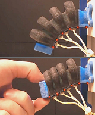 |
Rob B.N. Scharff, Rens M. Doornbusch, Eugeni L. Doubrovski, Jun Wu, Jo M.P. Geraedts, and Charlie C.L. Wang,
"Color-based proprioception of soft actuators interacting with objects", IEEE/ASME Transactions on Mechatronics, vol.24, no.5, pp.1964-1973, October 2019.
[PDF]
[Video@YouTube]
[Report@3DPrint.com]
Abstract Actuators using soft materials feature a large number of degrees of freedom. This tremendous flexibility allows a soft actuator to passively adapt its shape to the objects under interaction. In this paper we propose a novel proprioception method for soft actuators during real-time interaction with priorly unknown objects. Firstly, we design a color-based sensing structure that instantly translates the inflation of a bellow into changes in color, which are subsequently detected by a miniaturized color sensor. The color sensor is small and thus multiple of them can be integrated into soft pneumatic actuators to reflect local deformations. Secondly, we make use of a Feed-forward Neural Network (FNN) to reconstruct a multivariate global shape deformation from local color signals. Our results demonstrate that deformations of the actuator during interaction, including the sigmoid-like shape, can be accurately reconstructed. The accurate shape sensing represents a significant step towards closed-loop control of soft robots in unstructured environments. |
| 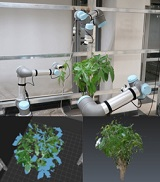 |
Chenming Wu, Rui Zeng, Jia Pan, Charlie C.L. Wang, and Yong-Jin Liu,
"Plant phenotyping by deep-learning based planner for multi-robots",
IEEE Robotics and Automation Letters, Presented at IEEE/RSJ International Conference on Intelligent Robots and Systems (IROS 2019), Macau, November 4-8, 2019, vol.4, no.4, pp.3113-3120, October 2019.
[PDF]
[Video@YouTube]
Abstract Manual plant phenotyping is slow, error-prone and labor-intensive. In this paper, we present an automated robotic system for fast, precise and noninvasive measurements using a new deep-learning based next-best view planning pipeline. Specifically, we first use a deep neural network to estimate a set of candidate voxels for next scanning. Next, we cast rays from these voxels to determine the optimal viewpoints. We empirically evaluate our method in simulation and real-world robotic experiments with up to three robotic arms to demonstrate its efficiency and effectiveness. One advantage of our new pipeline is that it can be easily extended to a multi-robot system where multiple robots move simultaneously according to the planned motions. Our system significantly outperforms the single-robot systems in flexibility and planning time. High-throughput phenotyping can be made practically. |
| 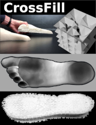 |
Tim Kuipers, Jun Wu, and Charlie C.L. Wang,
"CrossFill: Foam structure with graded density for continuous material extrusion",
Computer-Aided Design, Special Issue of 2019 Symposium on Solid and Physical Modeling, June 17-19, 2019, Vancouver, Canada, vol.114, pp.37-50, September 2019. (Best Paper Award - 2nd Place)
[PDF]
[Video@YouTube]
[Report@3DPrint.com]
Abstract The fabrication flexibility of 3D printing has sparked a lot of interest in designing structures with spatially graded material properties. In this paper, we propose a new type of density graded structure that is particularly designed for 3D printing systems based on filament extrusion. In order to ensure high-quality fabrication results, extrusion-based 3D printing requires not only that the structures are self-supporting, but also that extrusion toolpaths are continuous and free of self-overlap. The structure proposed in this paper, called CrossFill, complies with these requirements. In particular, CrossFill is a self-supporting foam structure, for which each layer is fabricated by a single, continuous and overlap-free path of material extrusion. Our method for generating CrossFill is based on a space-filling surface that employs spatially varying subdivision levels. Dithering of the subdivision levels is performed to accurately reproduce a prescribed density distribution. We demonstrate the effectiveness of CrossFill on a number of experimental tests and applications. |
| 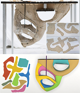 |
Xiaoting Zhang, Guoxin Fang, Melina Skouras, Gwenda Gieseler, Charlie C.L. Wang, and Emily Whiting,
"Computational design of fabric formwork",
ACM Transactions on Graphics (SIGGRAPH 2019), vol.38, no.4, article no.109 (13 pages), July 2019.
[PDF]
[Video@YouTube]
Abstract We present an inverse design tool for fabric formwork - a process where flat panels are sewn together to form a fabric container for casting a plaster sculpture. Compared to 3D printing techniques, the benefit of fabric formwork is its properties of low-cost and easy transport. The process of fabric formwork is akin to molding and casting but having a soft boundary. Deformation of the fabric container is governed by force equilibrium between the pressure forces from liquid fill and tension in the stretched fabric. The final result of fabrication depends on the shapes of the flat panels, the fabrication orientation and the placement of external supports. Our computational framework generates optimized flat panels and fabrication orientation with reference to a target shape, and determines effective locations for external supports. We demonstrate the function of this design tool on a variety of models with different shapes and topology. Physical fabrication is also demonstrated to validate our approach. |
| 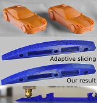 |
Jimmy Etienne, Nicolas Ray, Daniele Panozzo, Samuel Hornus, Charlie C.L. Wang,
Jonas Martinez, Sara McMains, Marc Alexa, Brian Wyvill, and Sylvain Lefebvre,
"CurviSlicer: Slightly curved slicing for 3-axis printers", ACM Transactions on Graphics (SIGGRAPH 2019), vol.38, no.4, article no.81 (11 pages), July 2019.
[PDF]
Abstract Most additive manufacturing processes fabricate objects by stacking planar layers of solidified material. As a result, produced parts exhibit a so-called staircase effect, which results from sampling slanted surfaces with parallel planes. Using thinner slices reduces this effect, but it always remains visible where layers almost align with the input surfaces. In this research we exploit the ability of some additive manufacturing processes to deposit material slightly out of plane to dramatically reduce these artifacts. We focus in particular on the widespread Fused Filament Fabrication (FFF) technology, since most printers in this category can deposit along slightly curved paths, under deposition slope and thickness constraints. Our algorithm curves the layers, making them either follow the natural slope of the input surface or on the contrary, make them intersect the surfaces at a steeper angle thereby improving the sampling quality. Rather than directly computing curved layers, our algorithm optimizes for a deformation of the model which is then sliced with a standard planar approach. We demonstrate that this approach enables us to encode all fabrication constraints, including the guarantee of generating collision-free toolpaths, in a convex optimization that can be solved using a QP solver. We produce a variety of models and compare print quality between curved deposition and planar slicing. |
| 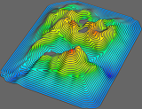 |
Chenming Wu, Chengkai Dai, Xiaoxi Gong, Yong-Jin Liu, Jun Wang, Xianfeng Gu, and Charlie C.L. Wang, "Energy-efficient coverage path planning for general terrain surfaces",
IEEE Robotics and Automation Letters,
Presented at IEEE International Conference on Robotics and Automation (ICRA 2019), Montreal, Canada, May 20-24, 2019, vol.4, no.3, pp.2584-2591, July 2019.
[PDF]
[Video@YouTube]
Abstract This paper tackles the problem of energy-efficient coverage path planning for exploring general surfaces by an autonomous vehicle. An efficient algorithms are developed to generate paths on freeform 3D surfaces according to a special design pattern as height-extremity-aware Fermat spiral for this purpose. By using the exact boundary-sourced geodesic distances, the method for generating Fermat spiral paths is first introduced to cover a general surface. Then, heuristics for energy-efficiency are incorporated to add peak points of a height-field as sources for geodesic computation. The paths generated by our method can significantly reduce the cost caused by gravity. Physical experiments have been taken on different terrain surfaces to demonstrate the effectiveness of our approach. |
| 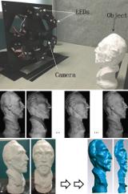 |
Wuyuan Xie, Ying Nie, Zhan Song, and Charlie C.L. Wang,
"Mesh-based computation for solving photometric stereo with near point lighting",
IEEE Computer Graphics and Applications, vol.39, no.3, pp.73-85, May/June 2019.
[PDF] [Source Code & Data Set]
(This is an extended version of the paper - Photometric stereo with near point lighting: A solution by mesh deformation, which is published in 2015 IEEE CVPR Conference, Boston, Massachusetts, June 7-12, 2015. [Data-Set] [Video@YouTube] ) Abstract We tackle the problem of dense reconstruction with a practical system, in which near point lighting is employed. Different from the conventional formulation of photometric stereo that assumes parallel lighting, photometric stereo under the near point lighting (NPL) condition is a nonlinear problem as the local surface normals are coupled with its distance to the camera as well as the light sources. After obtaining the locations of point lights by a calibration process, we develop a new framework to solve this nonlinear reconstruction problem via mesh deformation, in which each facet is corresponding to a pixel in the image captured by the camera. In our framework, mesh deformation is decoupled into an iteration of interlaced steps of local projection and global blending. Experimental results verify that our method can generate accurate estimation of surface shape under NPL in a few iterations. Besides, this approach is robust to errors on the positions of light sources and is easy to be implemented. |
| 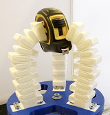 |
Rob B.N. Scharff, Jun Wu, Jo Geraedts, and Charlie C.L. Wang, "Reducing out-of-plane deformation of soft robotic actuators for stable grasping",
IEEE International Conference on Soft Robotics (RoboSoft 2019), Seoul, Korea, April 14-18, 2019.
[PDF]
[Video@YouTube]
Abstract For grasping (unknown) objects, soft pneumatic actuators are primarily designed to bend towards a specific direction. Due to the flexibility of material and structure, soft actuators are also prone to out-of-plane deformations including twisting and sidewards bending, especially if the loading is asymmetric. In this paper, we demonstrate the negative effects of out-of-plane deformation on grasping. A structural design is proposed to reduce this type of deformation and thus improve grasping stability. Comparisons are first performed on soft pneumatic actuators with the same bending stiffness but different resistances to out-of-plane deformation, which is realized by changing the cross-section of the inextensible layer. To reduce out-of-plane deformation, a stiffening structure inspired by spatial flexures is integrated into the soft actuator. The integrated design is 3D printed using a single material. Physical experiments have been conducted to verify the improved grasping stability. |
| 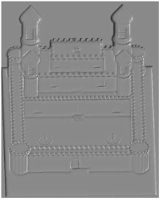 |
Mingqiang Wei, Yang Tian, Wai-Man Pang, Charlie C.L. Wang, Ming-Yong Pang, Jun Wang, Jing Qin, and Pheng-Ann Heng,
"Bas-relief modeling from normal layers",
IEEE Transactions on Visualization and Computer Graphics, vol.25, no.4, pp.1651-1665, April 2019.
[PDF]
Abstract Bas-relief is characterized by its unique presentation of intrinsic shape properties and/or detailed appearance using materials raised up in different degrees above a background. However, many bas-relief modeling methods could not manipulate a scene's details well. We propose a simple and effective solution for two kinds of bas-relief modeling (i.e., structure-preserving and detail-preserving) which is different from the majority of tone mapping alike methods. Our idea originates from an observation on typical 3D models which are decomposed into a piecewise smooth base layer and a detail layer in normal field. Proper manipulation of the two layers contributes to both structure-preserving and detail-preserving bas-relief modeling. We solve the modeling problem in a discrete geometry processing setup that uses normal-based mesh processing as a theoretical foundation. In specific, using a two-step mesh smoothing mechanism as a bridge, we transfer the bas-relief modeling problem into a discrete space, and solve it in a least-squares manner. Experiments and comparisons to the state-of-the-art methods show that (i) geometry details are better preserved in a high compression, and (ii) structures are clearly preserved without shape distortion and interference from details. |
| 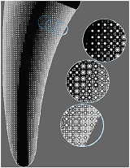 |
Eric Garner, Helena M.A. Kolken, Charlie C.L. Wang, Amir A. Zadpoor, and Jun Wu, "Compatibility in microstructural optimization for additive manufacturing", Additive Manufacturing, vol.26, pp.65-75, March 2019.
[PDF]
[Project with Code]
Abstract Microstructures with spatially-varying properties such as trabecular bone are widely seen in nature. These functionally graded materials possess smoothly changing microstructural topologies that enable excellent micro and macroscale performance. The fabrication of such microstructural materials is now enabled by additive manufacturing (AM). A challenging aspect in the computational design of such materials is ensuring compatibility between adjacent microstructures. Existing works address this problem by ensuring geometric connectivity between adjacent microstructural unit cells. In this paper, we aim to find the optimal connectivity between topology optimized microstructures. Recognizing the fact that the optimality of connectivity can be evaluated by the resulting physical properties of the assemblies, we propose to consider the assembly of adjacent cells together with the optimization of individual cells. In particular, our method simultaneously optimizes the physical properties of the individual cells as well as those of neighbouring pairs, to ensure material connectivity and smoothly varying physical properties. We demonstrate the application of our method in the design of functionally graded materials for implant design (including an implant prototype made by AM), and in the multiscale optimization of structures. |
| 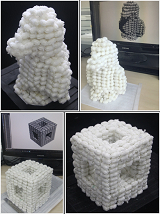 |
Minjing Yu, Zipeng Ye, Yongjin Liu, Ying He, and Charlie C.L. Wang,
"LineUp: Computing chain-based physical transformation",
ACM Transactions on Graphics, vol.38, no.1, article no.11 (16 pages), February 2019.
[Video@YouTube]
Abstract In this paper, we introduce a novel method that can generate a sequence of physical transformations between 3D models with different shape and topology. Feasible transformations are realized on a chain structure with connected components that are 3D printed. Collision-free motions are computed to transform between different configurations of the 3D printed chain structure. To realize the transformation between different 3D models, we first voxelize these input models into similar number of voxels. The challenging part of our approach is to generate a simple path - as a chain configuration to connect most voxels. A layer-based algorithm is developed with theoretical guarantee of the existence and the path length. We find that collision-free motion sequence can always be generated when using a straight line as the intermediate configuration of transformation. The effectiveness of our method is demonstrated by both the simulation and the experimental tests taken on 3D printed chains. |
| 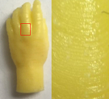 |
Huachao Mao, Tsz-Ho Kwok, Yong Chen, and Charlie C.L. Wang,
"Adaptive slicing based on efficient profile analysis for additive manufacturing",
Computer-Aided Design, vol.107, pp.89-101, February 2019.
[PDF]
Abstract Adaptive slicing is an important computational task required in the layer-based manufacturing process. Its purpose is to find an optimal trade-off between the fabrication time (number of layers) and the surface quality (geometric deviation error). Most of the traditional adaptive slicing algorithms are computationally expensive or only based on local evaluation of errors. To tackle these problems, we introduce a method to efficiently generate the slicing plans by a new metric profile that can characterize the distribution of deviation errors along the building direction. By generalizing the conventional error metrics, the proposed metric profile is a density function of deviation errors, which measures the global deviation errors rather than the in-plane local geometry errors used in most prior methods. Slicing can be efficiently evaluated based on metric profiles in contrast to the expensive computation on models in boundary-representation. An efficient algorithm based on dynamic programming is proposed to find the best slicing plan. Our adaptive slicing method can also be applied to models with weighted features and can serve as the inner loop to search the best building direction. The performance of our approach is demonstrated by experimental tests on different examples. |
| 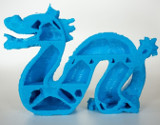 |
Weiming Wang, Yong-Jin Liu, Jun Wu, Shengjing Tian, Charlie C.L. Wang, Ligang Liu, and Xiuping Liu, "Support-free hollowing", IEEE Transactions on Visualization and Computer Graphics, vol.24, no.10, pp.2787-2798, October 2018.
[PDF]
[Video@YouTube]
[Data Set]
Abstract Offsetting-based hollowing is a solid modeling operation widely used in 3D printing, which can change the model's physical properties and reduce the weight by generating voids inside a model. However, a hollowing operation can lead to additional supporting structures for fabrication in interior voids, which cannot be removed. As a consequence, the result of a hollowing operation is affected by these additional supporting structures when applying the operation to optimize physical properties of different models. This paper proposes a support-free hollowing framework to overcome the difficulty of fabricating voids inside a solid. The challenge of computing a support-free hollowing is decomposed into a sequence of shape optimization steps, which are repeatedly applied to interior mesh surfaces. The optimization of physical properties in different applications can be easily integrated into our framework. Comparing to prior approaches that can generate support-free inner structures, our hollowing operation can reduce more volume of material and thus provide a larger solution space for physical optimization. Experimental tests are taken on a number of 3D models to demonstrate the effectiveness of this framework. |
 |
Chengkai Dai, Charlie C.L. Wang, Chenming Wu, Sylvain Lefebvre, Guoxin Fang, and Yongjin Liu,
"Support-free volume printing by multi-axis motion",
ACM Transactions on Graphics (SIGGRAPH 2018), vol.37, no.4, article no.134 (13 pages), July 2018.
[PDF]
[Supplementary]
[Video@YouTube]
[Source Code]
[Toolpaths]
Abstract This paper presents a new method to fabricate 3D models on a robotic printing system equipped with multi-axis motion. Materials are accumulated inside the volume along curved tool-paths so that the need of supporting structures can be tremendously reduced - if not completely abandoned - on all models. Our strategy to tackle the challenge of tool-path planning for multi-axis 3D printing is to perform two successive decompositions, first volume-to-surfaces and then surfaces-to-curves. The volume-to-surfaces decomposition is achieved by optimizing for a scalar field within the volume that represents the fabrication sequence. The field is constrained such that its iso-values represent curved layers that are supported from below, and present a convex surface affording for collision-free navigation of the printer head. After extracting all curved layers, the surfaces-to-curves decomposition covers them with tool-paths while taking into account constraints from the robotic deposition system. Our method successfully generates tool-paths for 3D printing models with large overhangs and high-genus topology. We fabricated several challenging cases on our robotic platform to verify and demonstrate its capabilities. |
| 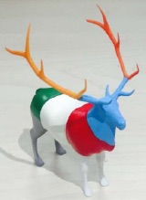 |
Aamir Khan Jadoon, Chenming Wu, Yong-Jin Liu, Ying He, and Charlie C.L. Wang,
"Interactive partitioning of 3D models into printable parts",
IEEE Computer Graphics and Applications, vol.38, no.4, pp.38-53, July/August 2018. [PDF]
[Data Set]
Abstract In this paper, we present an easy, flexible and interactive tool for partitioning a 3D model, which is larger than 3D-printer's working volume, into printable parts in an intuitive way. Our presented tool is based on the elegant partitioning optimization framework Chopper. Our tool aims at improving Chopper by providing users three easy-to-use interactive operations: no-go region painting, cutting plane specification and components re-union. With these operations, we show that (1) exhaustive search in the BSP tree - the most time-consuming step in Chopper - can be avoided, (2) more flexible geometric configurations can be provided, (3) user's design intention is considered naturally and efficiently, and customized 3D partitioning results can be obtained. We test our tool on a wide range of 3D models and observe promising results. A preliminary user study also demonstrates its effectiveness and efficiency. |
 |
Ran Yi, Chenming Wu, Yong-Jin Liu, Ying He, and Charlie C.L. Wang,
"Delta DLP 3D printing of large models", IEEE Transactions on Automation Science and Engineering, vol.15, no.3, pp.1193-1204, July 2018.
[PDF]
[Video@YouTube]
(This is an extended version of the paper - Delta DLP 3D printing with large size, which is published in 2016 IEEE/RSJ International Conference on Intelligent Robots and Systems (IROS 2016), Daejeon, Korea, October 9-14, 2016. [PDF] [Video@YouTube]) Abstract This paper presents a 3D printing system that uses a low-cost off-the-shelf consumer projector to fabricate large models. Compared with traditional DLP 3D printers using a single vertical carriage, the platform of our DLP 3D printer using delta mechanism can also move horizontally in the plane. We show that this system can print 3D models much larger than traditional DLP 3D printers. The major challenge to realize 3D printing of large models in our system comes from how to cover a planar polygonal domain by a minimum number of rectangles with fixed size, which is NP-hard. We propose a simple yet efficient approximation algorithm to solve this problem. The key idea is to segment a polygonal domain by using its medial axis and afterwards merge small parts in the segmentation. Given an arbitrary polygon Q with n generators (i.e., line segments and reflex vertices in Q), we show that the time complexity of our algorithm is O(n2log2n) and the number of output rectangles covering Q is O(Kn), where K is an input-polygon-dependent constant. A physical prototype system is built and several large 3D models with complex geometric structures have been printed as examples to demonstrate the effectiveness. |
| 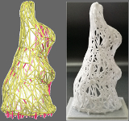 |
Xiuping Liu, Liping Lin, Jun Wu, Weiming Wang, Baocai Yin, and Charlie C.L. Wang,
"Generating sparse self-supporting wireframe models for 3D printing using mesh simplification", Graphical Models, selected papers from Computational Visual Media conference (CVM) 2018, vol.98, pp.14-23, July 2018.
Abstract Wireframe models are becoming a popular option in 3D printing. Generating sparse wireframe models using classic mesh simplification methods leads to models that require a lot of support structures in the layer-upon-layer additive process. In this paper we present a mesh simplification method that takes into account the overhang angle. Specifically, we propose a metric for self-supportability. By combining this novel metric together with the classic error metrics for mesh simplification, our method generates sparse wireframe models that need much less supports. Moreover, the operations of vertex position and edge flipping are optimized to further increase self-supportability of the wireframe models. We demonstrate the effectiveness of the proposed method on a number of 3D models. |
| 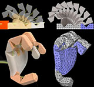 |
Guoxin Fang, Christopher-Denny Matte, Tsz-Ho Kwok, and Charlie C.L. Wang,
"Geometry-based direct simulation for multi-material soft robots",
IEEE International Conference on Robotics and Automation (ICRA 2018), Brisbane, Australia, May 21-25, 2018.
[PDF]
[Video@YouTube]
Abstract Robots fabricated by soft materials can provide higher flexibility and thus better safety while interacting with natural objects with low stiffness such as food and human beings. However, as many more degrees of freedom are introduced, the motion simulation of a soft robot becomes cumbersome, especially when large deformations are presented. Moreover, when the actuation is defined by geometry variation, it is not easy to obtain the exact loads and material properties to be used in the conventional methods of deformation simulation. In this paper, we present a direct approach to take the geometric actuation as input and compute the deformed shape of soft robots by numerical optimization using a geometry-based algorithm. By a simple calibration, the properties of multiple materials can be modeled geometrically in the framework. Numerical and experimental tests have been conducted to demonstrate the performance of our approach on both cable-driven and pneumatic actuators in soft robotics. |
| 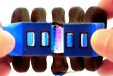 |
Rob B.N. Scharff, Rens M. Doornbusch, Xander L. Klootwijk, Ajinkya A. Doshi, Eugeni L. Doubrovski, Jun Wu, Jo M.P. Geraedts, and Charlie C.L. Wang,
"Color-based sensing of bending deformation on soft robots",
IEEE International Conference on Robotics and Automation (ICRA 2018), Brisbane, Australia, May 21-25, 2018.
[PDF]
[Video@YouTube]
Abstract This paper introduces a novel approach for sensing the bending deformation on soft robots by leveraging multicolor 3D printing. The measurement of deformation enables to complete the feedback loop of deformation control on soft actuators. The principle underlying our approach is that deformation is reflected by a change in color patterns, which can be detected by compact color sensors. Two novel designs are presented to generate color signals on 3D printed objects, which we call a structured generator and an integrated generator. Signal processing and calibration methods are developed to transform the color signal into a meaningful deformation metric. Our experimental tests taken on soft pneumatic actuators confirm that color signals can be stably generated and captured according to the bending deformation. The results demonstrate the usability of this sensing approach in deformation control. |
|
Chuhua Xian, Shuo Jin, and Charlie C.L. Wang,
"Efficient C2-weighting for image warping", IEEE Computer Graphics and Applications, vol.38, no.1, pp.59-76, January 2018.
[PDF]
[More Results]
[Video@YouTube]
Abstract Handle-driven image warping based on linear blending is widely used in many applications because of its merits on intuitiveness, efficiency and easiness of implementation. In this paper, we develop a method to compute high-quality weights within a closed domain for image warping. The property of C^2-continuity in weights is guaranteed by the carefully formulated basis functions. The efficiency of our algorithm is ensured by a closed-form formulation of the computation for weights. The cost of inserting a new handle is only the time to evaluate the distances from the new handle to all other sample points in the domain. A virtual handle insertion algorithm is developed to allow users to freely place handles within the domain while preserving the satisfaction of all expected criteria on weights for linear blending. Experimental examples for real-time applications are shown to demonstrate the effectiveness of this method. |
| 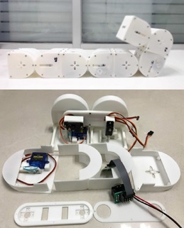 |
Minjing Yu, Yong-Jin Liu, and Charlie C.L. Wang, "EasySRRobot: An easy-to-build self-reconfigurable robot with optimized design", IEEE Conference on Robotics and Biomimetics, Macau, December 5-8, 2017.
[PDF]
[Video@YouTube] (Finalist of Best Student Paper Award)
Abstract Self-reconfigurable modular robots (SRRobot) that can change their shape and function in different environments according to different tasks have caught a lot of attention recently. Most existing prototypes use professional electronic components with relatively expensive cost and high barrier of fabrication. In this paper, we present a low-cost SSRobot with double-cube modules. Our system is easy-to-build even for novices as all electric components are off-the-shelf and the structural components in plastics are made by 3D printing. To have a better design of interior structures, we first construct a design space for all feasible solutions that satisfy the constraints of fabrication. Then, an optimized solution is found by an objective function incorporating the factors of space utilization, structural soundness and assembly complexity. Thirty EasySRRobot modules are manufactured and assembled. The functionality of our algorithm is demonstrated by comparing an optimized interior design with other two feasible designs and realizing different motions on an EasySRRobot with four modules. |
| 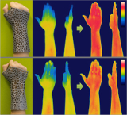 |
Xiaoting Zhang, Guoxin Fang, Chengkai Dai, Jouke Verlinden, Jun Wu, Emily Whiting, and Charlie C.L. Wang,
"Thermal-comfort design of personalized casts", ACM Symposium on User Interface Software and Technology (UIST), pp.243-254, Quebec City, Canada, October 22-25, 2017.
[PDF]
[Video@YouTube]
Abstract This paper introduces a novel method for designing personalized orthopedic casts which are aware of thermal-comfort while satisfying mechanical requirements. Our pipeline starts from thermal images taken by an infrared camera, by which the distribution of thermal-comfort sensitivity is generated on the surface of a 3D scanned model. We formulate a hollowed Voronoi tessellation pattern to represent the covered region for a web-like cast design. The pattern is further optimized according to the thermal-comfort sensitivity calculated from thermal images. Working together with a thickness variation method, we generate a solid model for a personalized cast maximizing both thermal comfort and mechanical stiffness. To demonstrate the effectiveness of our approach, 3D printed models of personalized casts are tested on body parts of different individuals. |
| 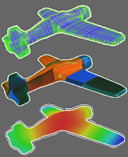 |
Gang Xu, Tsz-Ho Kwok, and Charlie C.L. Wang,
"Isogeometric computation reuse method for complex objects with topology-consistent volumetric parameterization",
Computer-Aided Design, vol.91, pp.1-13, October 2017. [PDF]
Abstract Volumetric spline parameterization and computational efficiency are two major challenges in isogeometric analysis (IGA). To tackle this problem, we propose a framework of computation reuse in IGA on a set of three-dimensional models with similar semantic features. Given a template domain, B-spline based consistent volumetric parameterization is first constructed for a set of models with similar semantic features. An effcient quadrature-free method is investigated in our framework to compute the entries of stiffness matrix by Bézier extraction and polynomial approximation. In our approach, evaluation on the stiffness matrix and imposition of the boundary conditions can be pre-computed and reused during IGA on a set of CAD models. Examples with complex geometry are presented to show the effectiveness of our methods, and efficiency similar to the computation in linear finite element analysis can be achieved for IGA taken on a set of models. |
| 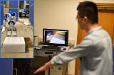 |
Shuo Jin, Chengkai Dai, Yang Liu, and Charlie C.L. Wang,
"Motion imitation based on sparsely sampled correspondence",
ASME Transactions - Journal of Computing and Information Science in Engineering, vol.17, no.4, 041009 (7 pages), June, 2017.
[PDF] [Video@YouTube]
Abstract Existing techniques for motion imitation often suffer a certain level of latency due to their computational overhead or a large set of correspondence samples to search. To achieve real-time imitation with small latency, we present a framework in this paper to reconstruct motion on humanoids based on sparsely sampled correspondence. The imitation problem is formulated as finding the projection of a point from the configuration space of a human's poses into the configuration space of a humanoid. |
| 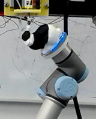 |
Chenming Wu, Chengkai Dai, Guoxin Fang, Yong-Jin Liu, and Charlie C.L. Wang,
"RoboFDM: a robotic system for support-free fabrication using FDM",
IEEE International Conference on Robotics and Automation (ICRA 2017), Singapore, May 29 - June 3, 2017, pp.1175-1180.
[PDF]
[Video@YouTube]
Abstract This paper presents a robotic system - RoboFDM that targets at printing 3D models without support-structures, which is considered as the major restriction to the flexibility of 3D printing. The hardware of RoboFDM consists of a robotic arm providing 6-DOF motion to the platform of material accumulation and an extruder forming molten filaments of polylactic acid (PLA). The fabrication of 3D models in this system follows the principle of fused decomposition modeling (FDM). Different from conventional FDM, an input model fabricated by RoboFDM is printed along different directions at different places. A new algorithm is developed to decompose models into support-free parts that can be printed one by one in a collision-free sequence. The printing directions of all parts are also determined during the computation of model decomposition. Experiments have been successfully taken on our RoboFDM system to print general freeform objects in a support-free manner. |
| 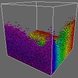 |
Lianping Xing, Charlie C.L. Wang, and Kin-Chuen Hui,
"Coherent spherical range-search for dynamic points on GPUs",
Computer-Aided Design, vol.86, pp.12-25, May 2017.
[PDF]
[Project Page - with Code]
[DLL Library]
[Video@YouTube for Particle Simulation]
Abstract We present an approach to accelerate spherical range-search (SRS) for dynamic points that employs the computational power of many-core GPUs. Unlike finding k approximate nearest neighbours (ANNs), exact SRS is needed in geometry processing and physical simulation to avoid missing small features. The spatial coherence of query points and the temporal coherence of dynamic points are exploited in our approach to achieve very efficient range-search on AABB-trees. We test our coherent SRS in several applications including point-point-set geometry processing, distance-field generation and particle-based simulation, which are best scenarios to present the spatial and the temporal coherence of spherical queries on dynamic points. On a PC with NVIDIA GTX 660 Ti GPUs, our approach can take 1M queries on 1M dynamic points at a rate of 1600 queries/ms, where 49 neighbours are found on average within the range of 1/100 of the bounding-box's diagonal length. We observe an increase of up to 4x compared with conventional voxel-based GPU searching approaches in the benchmark of particle-based fluid simulation. Moreover, the speedup can be scaled up to 150x when being applied to highly non-uniform distribution of particles in the simulation. |
| 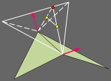 |
Kai-Ming Yu, Yu Wang, and Charlie C.L. Wang,
"Smooth geometry generation in additive manufacturing file format: problem study and new formulation",
Rapid Prototyping Journal, vol.23, no.1, 2017. [PDF]
Abstract In the newly released ASTM standard specification for Additive Manufacturing File (AMF) format - version 1.1, Hermite curve based interpolation is employed to refine input triangles to generate denser mesh with smoother geometry. This paper studies the problems of constructing smooth geometry based on Hermite interpolation on curves and proposes a solution to overcome these problems. A formulation using triangular Bezier patch is proposed in this paper to generate smooth geometry from input polygonal models. Different configurations on the boundary curves are analysed to further enrich this formulation. The proposed scheme has requirements for the input normals of a model, only C^0 interpolation can be generated on those cases with less-proper input. For these cases, the Boolean sum and the Nielson's point-opposite edge interpolation for triangular Coons patch are used to generate the smooth geometry as a C^0 interpolant. |
| 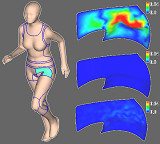 |
Yunbo Zhang, Charlie C.L. Wang, and Karthik Ramani,
"Optimal fitting of strain-controlled flattenable mesh surfaces",
International Journal of Advanced Manufacturing Technology, vol.87, no.9, pp.2873-2887, December 2016. [PDF]
Abstract A flattenable mesh surface is a polygonal mesh surface that can be unfolded into a planar patch without stretching any polygon. This paper presents a new method for computing a slightly stretched flattenable mesh surface M from a piecewise-linear surface patch P in 3D, where the shape approximation error between M and P is minimised and the strain of stretching on M is controlled. Prior approaches result in either a flattenable surface that could be quite different from the input shape or a (discrete) developable surface has relative simple shape. The techniques investigated in this paper overcome these difficulties. First, we introduce a new surface modeling method to conduct a sequence of nearly isometric deformations to morph a flattenable mesh surface to a new shape which has a better approximation of the input surface. Second, in order to get better initial surfaces for fitting and overcome topological obstacles, a shape perturbation scheme is investigated to obtain the optimal surface fitting result. Last, to improve the scalability of our optimal surface fitting algorithm, a coarse-to-fine fitting framework is exploited so that very dense flattenable mesh surfaces can be modeled and boundaries of the input surfaces can be interpolated. |
| 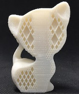 |
Jun Wu, Charlie C.L. Wang, Xiaoting Zhang, and Rüdiger Westermann,
"Self-supporting rhombic infill structures for additive manufacturing",
Computer-Aided Design, vol.80, pp.32-42, November 2016.
[PDF]
[Data Set]
Abstract Recent work has demonstrated that the interior material layout of a 3D model can be designed to make a fabricated replica satisfy application-specific demands on its physical properties, such as resistance to external loads. A widely used practice to fabricate such models is by layer-based additive manufacturing (AM), which however suffers from the problem of adding and removing interior supporting structures. In this paper, we present a novel method for generating application-specific infill structures on rhombic cells so that the resultant structures can automatically satisfy manufacturing requirements on overhang-angle and wall-thickness. Additional supporting structures can be avoided entirely in our framework. To achieve this, we introduce the usage of an adaptive rhombic grid, which is built from an input surface model. Starting from the initial sparse set of rhombic cells, via numerical optimization techniques an objective function can be improved by adaptively subdividing the rhombic grid and thus adding more walls in cells. We demonstrate the effectiveness of our method for generating interior designs in the applications of improving mechanical stiffness and static stability. |
| 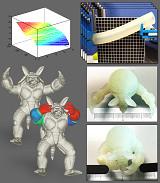 |
Xiaoting Zhang, Xinyi Le, Zhihao Wu, Emily Whiting, and Charlie C.L. Wang,
"Data-driven bending elasticity design by shell thickness",
Computer Graphics Forum, Eurographics Symposium on Geometry Processing 2016, June 20-24, 2016, Berlin, Germany, vol.35, no.5, pp.157-166, 2016.
[PDF]
[Extended Technical Report]
[Video@YouTube]
Abstract We present a method to design the deformation behavior of 3D printed models by an interactive tool, where the variation of bending elasticity at different regions of a model is realized by a change in shell thickness. Given a soft material to be used in 3D printing, we propose an experimental setup to acquire the bending behavior of this material on tubes with different diameters and thicknesses. The relationship between shell thickness and bending elasticity is stored in an echo state network using the acquired dataset. With the help of the network, an interactive design tool is developed to generate non-uniformly hollowed models to achieve desired bending behaviors. The effectiveness of this method is verified on models fabricated by different 3D printers by studying whether their physical deformation can match the designed target shape. |
| 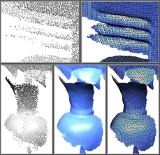 |
Shengjun Liu, Charlie C.L. Wang, Guido Brunnett, and Jun Wang,
"A closed-form formulation of HRBF-based surface reconstruction by approximate solution", Computer-Aided Design,
Special Issue of 2016 Symposium on Solid and Physical Modeling, June 20-24, 2016, Berlin, Germany, vol.78, pp.147-157, September 2016.
[PDF]
[Source Code]
[Data Set]
Abstract The Hermite radial basis functions (HRBFs) implicits have been used to reconstruct surfaces from scattered Hermite data points. In this work, we propose a closed-form formulation to construct HRBF-based implicits by a quasi-solution to approximate the exact one. A scheme is developed to automatically adjust the support sizes of basis functions to hold the error bound of a quasi-solution. Our method can generate an implicit function from positions and normals of scattered points without taking any global operation. Robust and efficient reconstructions are observed in our experimental tests on real data captured from a variety of scenes. (Supplementary Technical Report - "Error-bound, comparison and sub-sampling for closed-form HRBF surface reconstruction" [PDF]) |
| 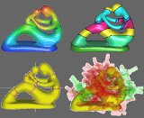 |
Tsz Ho Kwok, Weiwei Wan, Jia Pan, Charlie C.L. Wang, Jianjun Yuan, Kensuke Harada, and Yong Chen,
"Rope caging and grasping",
IEEE International Conference on Robotics and Automation (ICRA 2016), pp.1980-1986, Stockholm, Sweden, May 16-21, 2016.
[PDF]
[Video@YouTube]
Abstract We present a novel method for caging grasps in this paper by stretching ropes on the surface of a 3D object. Both topology and shape of a model to be grasped has been considered in our approach. Our algorithm can guarantee generating local minimal rings on every topological branches of a given model with the help of a Reeb graph. Cages and grasps can then be computed from these rings, and physical experimental tests have been conducted to verify the robustness of our approach. |
 |
Qianwen Chao, Jiangfan Yu, Chengkai Dai, Tiantian Xu, Li Zhang, Charlie C.L. Wang, and Xiaogang Jin,
"Steering micro-robotic swarm by dynamic actuating fields",
IEEE International Conference on Robotics and Automation (ICRA 2016), pp.5230-5235, Stockholm, Sweden, May 16-21, 2016.
[PDF]
[Video@YouTube]
Abstract We present a general solution for steering micro-robotic swarm by dynamic actuating fields. In our approach, the motion of micro-robots is controlled by changing the actuating direction of a field applied to them. The time-series sequence of actuating field's directions can be computed automatically. Given a target position in the domain of swarm, a governing field is first constructed to provide optimal moving directions at every points. Following these directions, a robot can be driven to the target efficiently. However, when working with a crowd of micro-robots, the optimal moving directions on different agents can contradict with each other. To overcome this difficulty, we develop a novel steering algorithm to compute a statistically optimal actuating direction at each time frame. Following a sequence of these actuating directions, a crowd of micro-robots can be transported to the target region effectively. Our steering strategy of swarm has been verified on a platform that generates magnetic fields with unique actuating directions. Experimental tests taken on aggregated magnetic micro-particles are quite encouraging. |
| 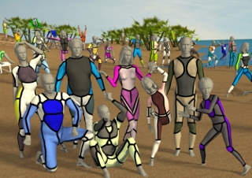 |
Tsz-Ho Kwok, Yanqiu Zhang, Charlie C.L. Wang, Yong-Jin Liu, and Kai Tang,
"Styling evolution for tight-fitting garments",
IEEE Transactions on Visualization and Computer Graphics, vol.22, no.5, pp.1580-1591, May 2016.
[PDF]
[Video@YouTube]
[Project Page - with Data-Set]
Abstract We present an evolution method for designing the styling curves of garments. The procedure of evolution is driven by aesthetics-inspired scores to evaluate the quality of styling designs, where the aesthetic considerations are represented in the form of streamlines on human bodies. A dual representation is introduced in our platform to process the styling curves of designs, based on which robust methods for realizing the operations of evolution are developed. Starting from a given set of styling designs on human bodies, we demonstrate the effectiveness of set evolution inspired by aesthetic factors. The evolution is adaptive to the change of aesthetic inspirations. By this adaptation, our platform can automatically generate new designs fulfilling the demands of variations in different human bodies and poses. |
Book Chapter and Survey Papers
| 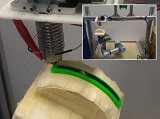 |
Chi-Chung Li, Chengkai Dai, Wei-Hsin Liao, and Charlie C.L. Wang, "Towards direct deposition of continuous-fibers on curved surfaces", Recent Advances in Additive Manufacturing, 2019, accepted.
[PDF]
Abstract The purpose of this article is to explore the possible methodology to realize the direct deposition of continuous fibers in a sandwich structure on curved 3D surfaces. Preliminary tests have been conducted to demonstrate the performance improvement. Physical experiments are conducted on a hardware setup with 6 degrees-of-freedom (DOF) motion provided by a robotic arm. With the help of such a hardware platform, we are able to reinforce 3D printed parts by a process of continuous-fiber deposition between layers of PLA matrix in 3D printing. |
| 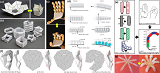 |
Yuen-Shan Leung, Tsz-Ho Kwok, Xiangjia Li, Yang Yang, Charlie C.L. Wang, and Yong Chen, "Challenges and status on design and computation for emerging additive manufacturing technologies", ASME Transactions - Journal of Computing and Information Science in Engineering, vol.19, no.2, 021013 (21 pages), March 2019. [PDF]
Abstract The revolution of additive manufacturing (AM) has led to many opportunities in fabricating complex and novel products. The increase of the printable materials and the emergence of the various fabricating processes continuously expand the capability of manufacturing. Our products are no longer limited to be single material, single scale or single function. In fact, a paradigm shift is taking place in the industries from geometry-centered usage to support functional demands, and hence it is expected to resolve wide range of complex and difficult problems. Although AM provides us higher design degree of freedom beyond the geometry to fabricate new objects with tailored properties and functions, there are only very few approaches for computational design in this new domain enabled by AM. The objectives of this study are to provide an overview on the current computer-aided design methodologies that are applied to multi-material, multi-scale, multi-form and multi-functional AM technologies. We summarize the difficulties encountered in the design approaches and emphasize the need for the future development. The study also introduces the related manufacturing processes, lists their present applications, and discusses their potential future trends. |
| 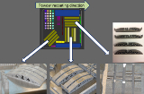 |
Jikai Liu, Andrew T. Gaynor, Shikui Chen, Zhan Kang, Krishnan Suresh, Akihiro Takezawa, Lei Li, Junji Kato, Jinyuan Tang, Charlie C.L. Wang, Lin Cheng, Xuan Liang, and Albert C To, "Current and future trends in topology optimization for additive manufacturing", Structural and Multidisciplinary Optimization, vol.57, no.6, pp.2457-2483, June 2018.
Abstract Manufacturing-oriented topology optimization has been extensively studied the past two decades, in particular for the conventional manufacturing methods, e.g., machining and injection molding or casting. Both design and manufacturing engineers have benefited from these efforts because of the close-to-optimal and friendly-to-manufacture design solutions. Recently, additive manufacturing (AM) has received significant attention from both academia and industry. The motivation of this perspective paper is to summarize the state-of-art topology optimization methods for a variety of AM topics. At the same time, this paper also expresses the authors' perspectives on the challenges and opportunities in these topics. |
|
Rob B.N. Scharff, Eugeni L. Doubrovski, Wim A. Poelman, Pieter P. Jonker, Charlie C.L. Wang, and Jo M.P. Geraedts,
"Towards behavior design of a 3D-printed soft robotic hand",
Soft Robotics: Trends, Applications and Challenges, Proceedings of the Soft Robotics Week,
pp.23-29, April 25-30, 2016, Livorno, Italy, Springer. [Video@YouTube]
Abstract This work presents an approach to integrate actuators, sensors, and structural components into a single product that is 3D printed using Selective Laser Sintering. The behavior of actuators, sensors, and structural components is customized to desired functions within the product. Our approach is demonstrated by the realization of human-like behavior in a 3D-printed soft robotic hand. This work describes the first steps towards creating the desired behavior by means of modeling specific volumes within the product using Additive Manufacturing. Our work shows that it is not necessary to limit the design of a soft robotic product to only integrating off-the-shelf components but instead we deeply embedded the design of the required behavior in the process of designing the actuators, sensors and structural components. |
 |
Tsz-Ho Kwok, Yong Chen, and Charlie C.L. Wang,
"Geometric analysis and computation using Layered Depth-Normal Images for three-dimensional microfabrication",
Chapter 5, Three-Dimensional Microfabrication Using Two-photon Polymerization, pp.119-147, 2016.
Abstract Additive manufacturing (AM) is a direct manufacturing process that provides the ability to fabricate parts with complex shape. Robust geometric computation is essential to deal with the complex geometry. Current geometric computation methods based on the boundary representation (B-rep) explicitly define and compute geometry. However, such approaches lack in simplicity and are prone to robustness problems. In this chapter, a point-based geometric computation method based on the Layered Depth-Normal Image (LDNI) is presented. A set of computation algorithms are developed for this new point-based method, including the conversions between the LDNI and B-rep models, the offsetting and the Boolean geometric operations, etc. A number of test cases has shown the robustness of the developed geometric operations, and a set of Computer-Aided Design and Manufacturing (CAD/CAM) applications related to the complex component design and manufacturing has also been explored. |
Under Review
| 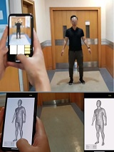 |
Bin Liu, Xiuping Liu, Zhixin Yang, and Charlie C.L. Wang, "Concise and effective network for 3D human modeling from orthogonal silhouettes", under review.
[Video@YouTube]
Abstract In this paper, we revisit the problem of 3D human modeling from two orthogonal silhouettes of individuals (i.e., front and side views). Different from our prior work, a supervised learning approach based on \textit{convolutional neural network} (CNN) is investigated to solve the problem by establishing a mapping function that can effectively extract features from two silhouettes and fuse them into coefficients in the shape space of human bodies. A new CNN structure is proposed in our work to exact not only the discriminative features of front and side views and also their mixed features for the mapping function. 3D human models with high accuracy are synthesized from coefficients generated by the mapping function. Existing CNN approaches for 3D human modeling usually learn a large number of parameters (from 8M to 350M) from two binary images. Differently, we investigate a new network architecture and conduct the samples on silhouettes as input. As a consequence, more accurate models can be generated by our network with only 2.5M coefficients. The training of our network is conducted on samples obtained by augmenting a publicly accessible dataset. Learning transfer by using datasets with a smaller number of scanned models is applied to our network to enable the function of generating results with gender-oriented (or geographical) patterns. |
|
Shengjun Liu, Tao Liu, Weiming Wang, Eugeni L. Doubrovski, and Charlie C.L. Wang, "Memory-efficient modeling of adaptive lattice structures for additive manufacturing", under review.
Abstract Lattice structures have been widely used in different applications of additive manufacturing due to its many superior physical properties. When being directly modeled by triangular meshes, a lattice structure with high complexity in geometry consumes a lot of memory. This prevents the usage of lattice structures in large scale applications (e.g., to design the interior structure of a solid with spatially graded material properties). In this paper, we propose a memory-efficient method to model adaptive lattice structures. Only a graph together with the radii of its edges are stored for representing a lattice structure. The corresponding solid for a lattice structure is generated locally by convolution surface in a streaming manner when slicing the solid. As a result, only limited memory is consumed for generating the planar contours for fabrication. Lattice structures with a massive number of struts can be effectively and efficiently modeled and processed. Different from distance-field, solid models represented by convolution surfaces have naturally blended shape at the intersections of struts which can avoid the stress concentration at regions with curvature discontinuity. Algorithms have also been developed in our framework to minimize the need of supporting structures and to generate a lattice structure meeting the designed density distribution. |